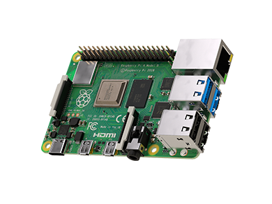
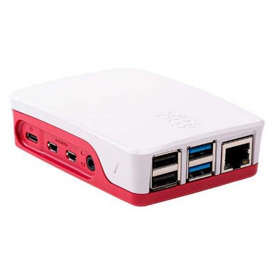

Una raspberry es un ordenador de bajo coste y formato compacto destinado al desarrollado para hacer accesible la informática a todos los usuarios. La Raspberry Pi también se caracteriza por ser muy utilizada para desarrollar pequeños prototipos y para la formación sobre informática y electrónica en los colegios.
La Raspberry Pi es la placa de un ordenador simple compuesto por un SoC, CPU, memoria RAM, puertos de entrada y salida de audio y vídeo, conectividad de red, ranura SD para almacenamiento, una toma para la alimentación y conexiones para periféricos.
